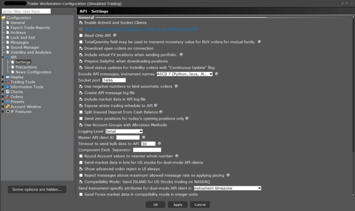
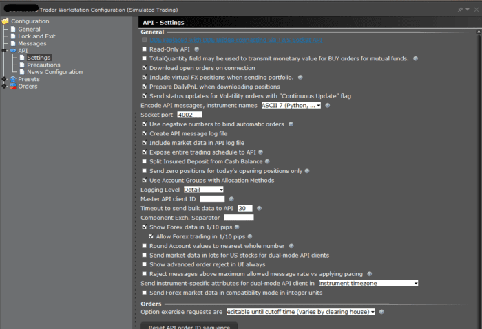

If there are remaining questions about available API functionality after reviewing the content of this documentation, the API Support group is available to help.
-> It is important to keep in mind that IB cannot provide programming assistance or give suggestions on how to code custom applications. The API group can review log files which contain a record of communications between API applications and TWS, and give details about what the API can provide.
General suggestions on starting out with the IB system:
Log files are used by developers and support to unambiguously understand the behavior of a request.
These files are stored on the clients machine and are only sent to Interactive Brokers by client request.
These logs will recycle every 7 days. This would include the current day and the prior 6 days.
TWS and IB Gateway can be configured to create a separate log file which has a record of just communications with API applications. This log is not enabled by default; but needs to be enabled by the Global Configuration setting “Create API Message Log File”(picture below).
Note: Both the API and TWS logs are encrypted locally. The API logs can be decrypted for review from the associated TWS or IB Gateway session, just like the TWS logs, as shown in the section describing the Local location of logs.
Note: The TWS/IB Gateway log file setting has to be set to ‘Detail’ level before an issue occurs so that information recorded correctly when it manifests. However due to the high amount of information that will be generated under this level, the resulting logs can grow considerably in size.
Enabling creation of API logs
TWS:

IB Gateway:

Enabling DEBUG-level logging for the host platform (TWS or IBG, this does not affect API logs):
Setting debug=1 has added benefits in TWS.
Logs are stored in the TWS settings directory, C:\Jts\ and then your user subdirectory by default on a Windows computer (the default can be configured differently on the login screen).
The path to the log file directory can be found from a TWS or IB Gateway session by using the combination Ctrl-Alt-U. This will reveal path such as C:\Jts\detcfsvirl\ (on Windows).
Due to privacy regulations, logs are encrypted before they are saved to disk. To review them on your machine, you may need to Export Your Logs from the associated TWS or IB Gateway session.
In some instances, your logs may be too large to export or upload for Client Services to review. In scenarios such as this, the Support team may request that you delete your existing API logs, and then replicate the error before attempting to upload them again.
To delete your logs:
If API logging has been enabled with the setting “Create API Message Log” during the time when an issue occurs, it can be uploaded to the API group.
Important: Please be aware that the process of uploading logs does not notify support, nor is a ticket logged. You will need to contact our representatives through a direct call, chat, or secure message center message for our representatives to be aware of the upload.
To upload logs as a Windows user:
To upload logs as a Mac and Linux user:
If logs have been uploaded, please let the API Support group know by creating a webticket in the Message Center in Account Management (under Support) indicating the username of the associated TWS session. In some cases a TWS log may also be requested at the Detailed logging level. The TWS log can grow quite large and may not be uploadable by the automatic method; in this case an alternative means of upload can be found.
Each supported API language of the API contains a message file that translates a given number identifier into their corresponding request. The message identifier numbers used in the underlying wire protocol is the core of the TWS API.
The information on the right documents where each message reader file is located. The {TWS API} listed is the path to the primary TWS API or JTS folder created from the API installation.
By default, this will be saved directly on the C: drive.
Both the Incoming and Outgoing message IDs are listed in one file.
{TWS API}\source\pythonclient\ibapi\messages.py
In our API logs, the direction of the message is indicated by the arrow at the beginning:
-> for incoming messages (TWS to client)
<- for outgoing messages (client to TWS)
Thus <- 3 (outgoing request of type 3) is a placeOrder request, and the subsequent incoming requests are:
-> 5 = openOrder response
-> 11 = executionData response
-> 59 = commissionReport response
Also note that the first openOrder response carries with it an orderStatus response in the same message. If that status were to change later, it would be delivered as a standalone message:
-> 3 = orderStatus response
Developers may often find a super-massive value returned from requests like market data, P&L information, and elsewhere. These are known as Unset values. Unset values are used throughout programming systems to indicate that a value is not available. Unset values are used in place of NULL characters to prevent any unexpected error be thrown in your code. Unset values are also used in place of values like 0 to avoid confusing viewers to believe they have an account balance of 0, or that an equity is worth $0.
An unset value is the maximum value of a given data type. So the Unset Double value will appear like 1.7976931348623157E308, which contains approximately 308 digits to intentionally appear extraneous.